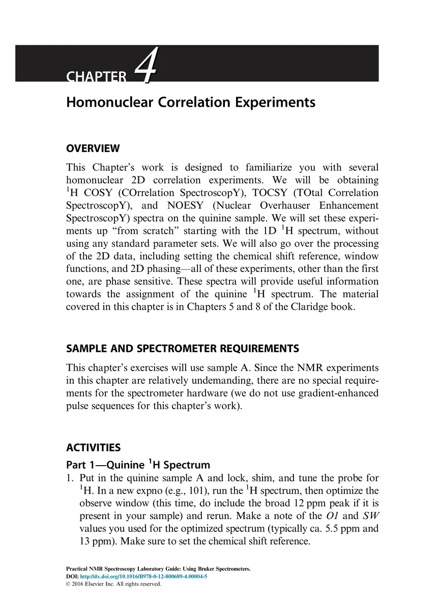
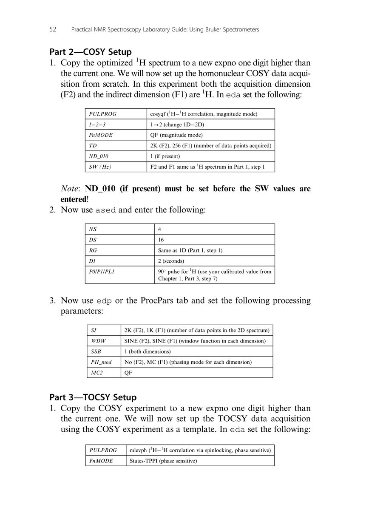
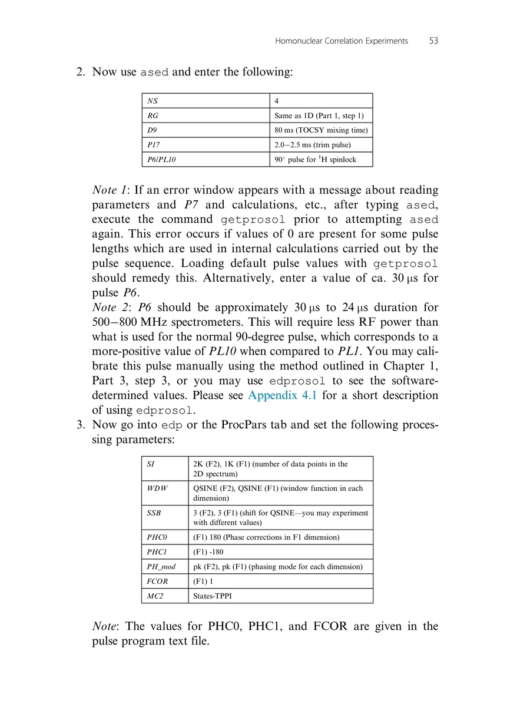
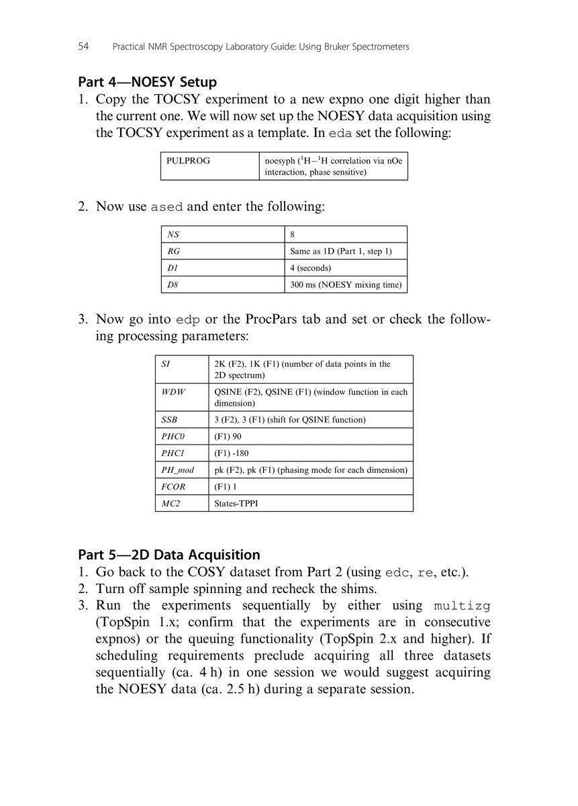
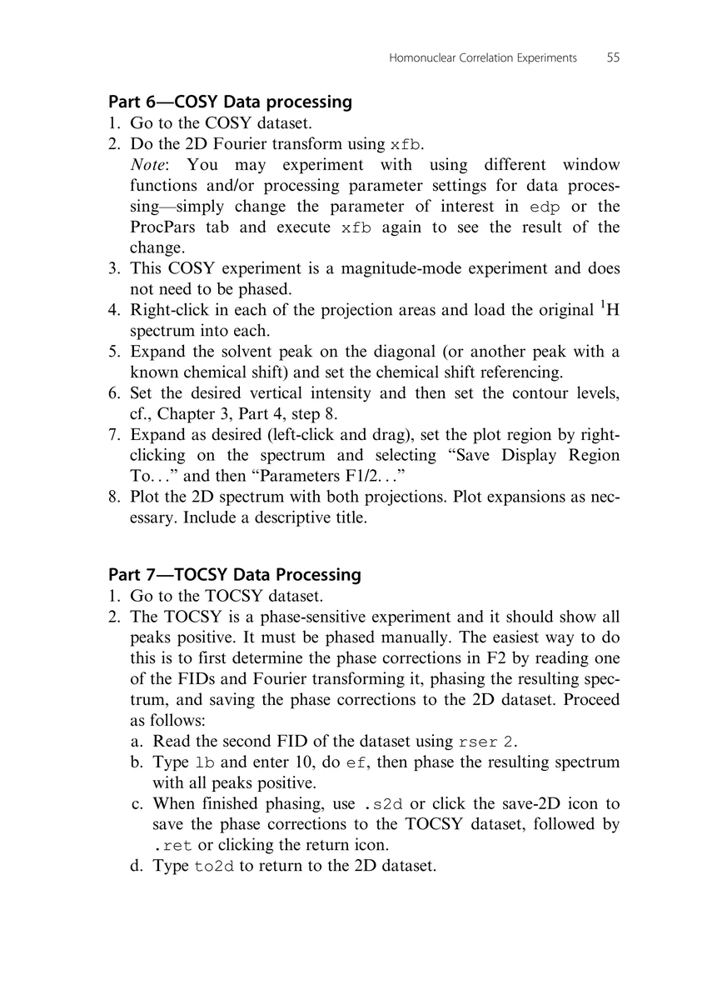
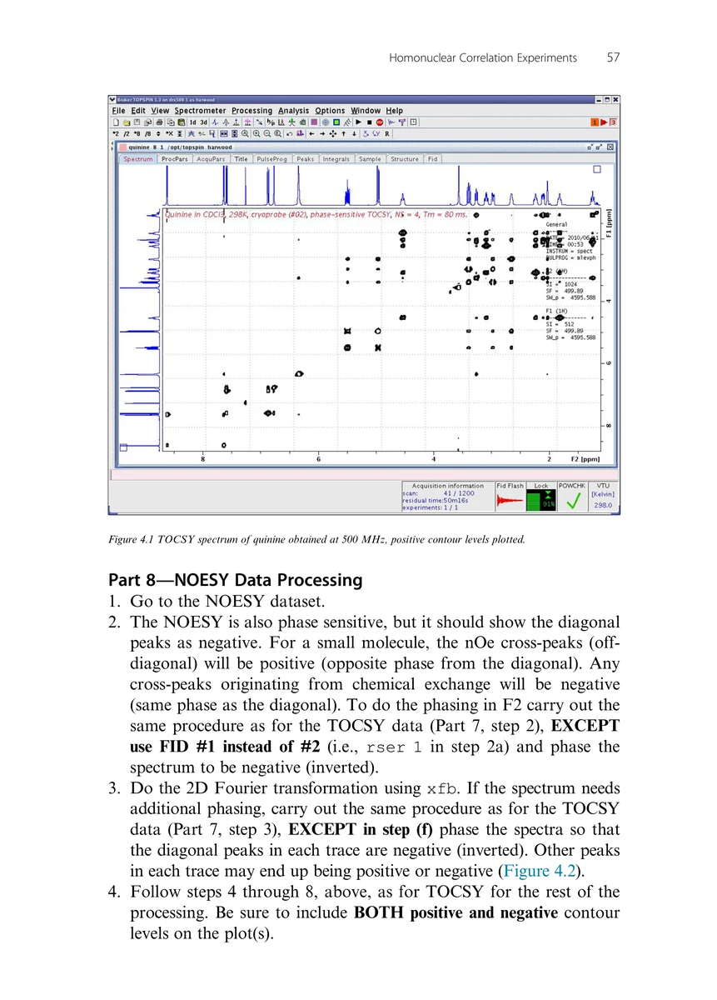
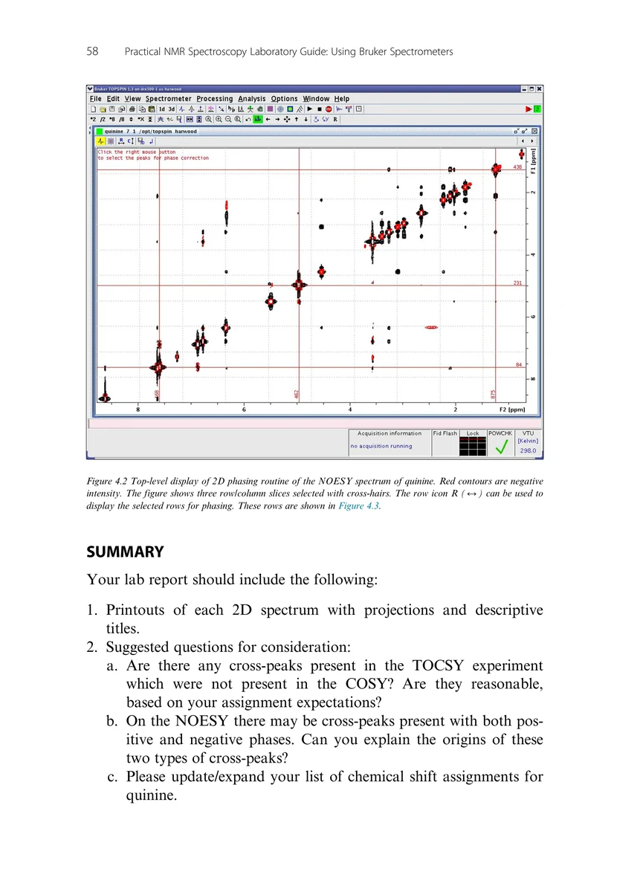
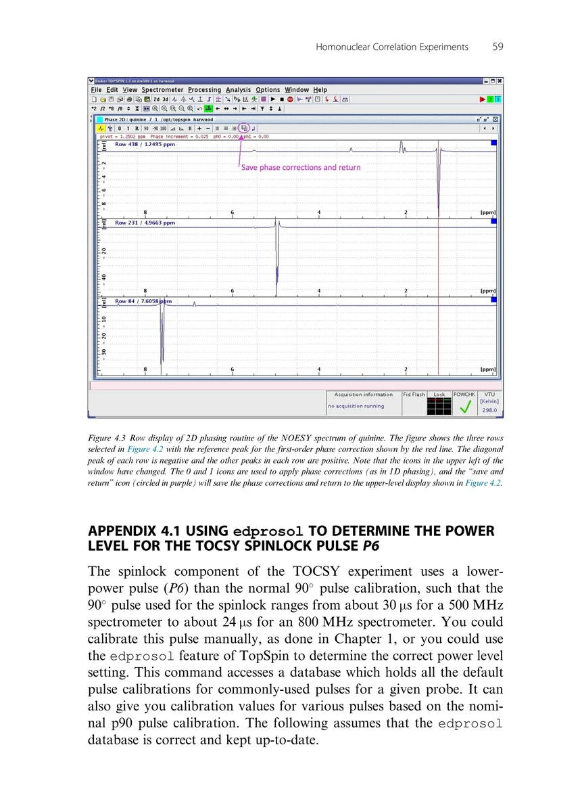
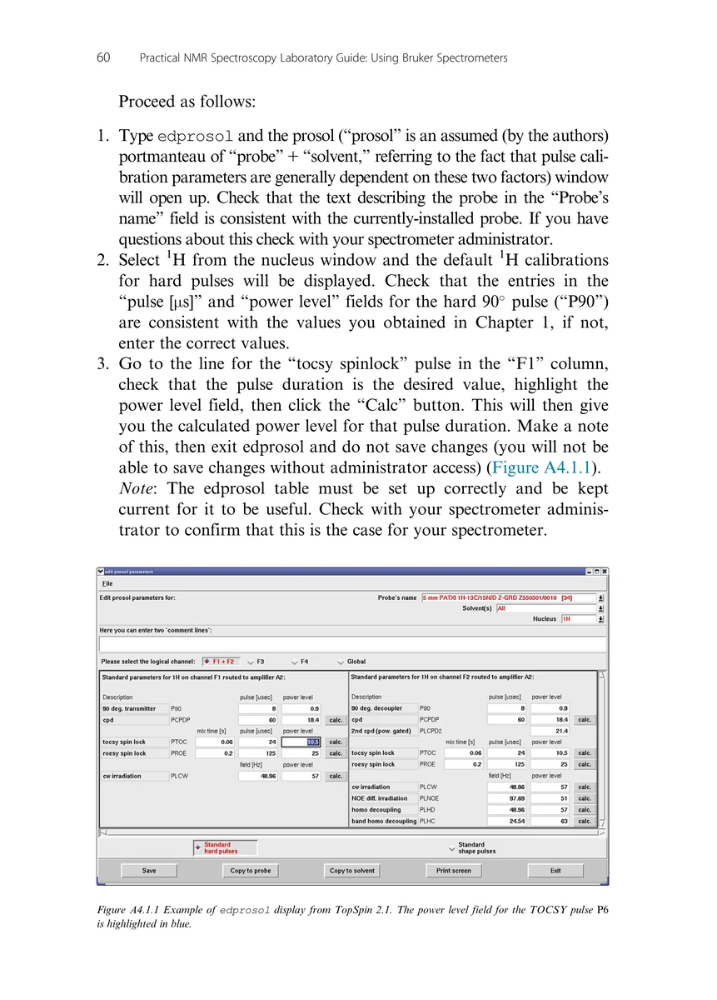

Chapter 4
Homonuclear Correlation Experiments
同核相关实验
PDF 60–69 · 原书 51–60 · Homonuclear Correlation Experiments









核磁共振实验方法、脉冲序列与谱图实践
Chapter 4
同核相关实验
PDF 60–69 · 原书 51–60 · Homonuclear Correlation Experiments








